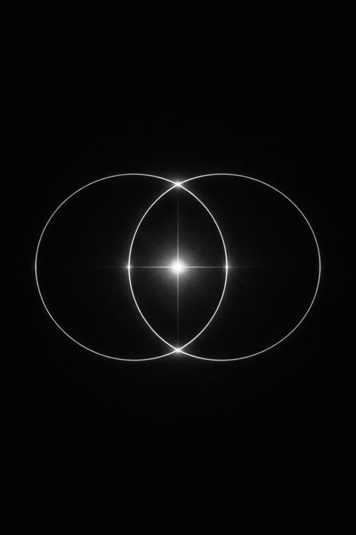

Pulso Origen: la frecuencia invisible que sostiene la vida
Volver al latido esencial que te habita

Hay algo en ti que late antes de cualquier pensamiento; un pulso… constante, silencioso, inteligente. No lo creaste tú, sin embargo, te sostiene en cada instante. Ese latido no es solo biológico, es la expresión de una fuerza mayor: la vida misma desplegándose a través de ti.
Vivimos dentro de un orden que no siempre comprendemos, pero que lo atraviesa y lo dispone todo, aunque no lo veamos.
Desde el movimiento de las estrellas hasta la forma en que una herida cicatriza, hay una inteligencia que opera más allá de la mente. Acaso se trate de un diseño preciso y sutil. Perfecto en su propia lógica.
¿Has reparado en cómo tu corazón late sin que tengas que recordárselo? Tu cuerpo respira incluso cuando te olvidas de hacerlo. La vida sucede… incluso cuando no la entiendes.
Pulso Origen nace de reconocer que no estamos separados de ese orden. Somos parte de él.
¿Te has sentido perdido alguna vez? ¿Has puesto en duda tu sentido de pertenencia? ¿Te has sentido solo, aun estando rodeado de muchísima gente a tu alrededor?
El latido como lenguaje de la vida
El corazón no solo bombea la sangre que recorre todos los rincones de tu cuerpo, él también marca un ritmo. Es el tambor interno que te recuerda que estás vivo. Que hay un pulso atravesándote. Que hay vida queriendo expresarse a través de ti.
Pero muchas veces, ese pulso queda cubierto por el ruido:
- Las exigencias externas
- Las expectativas
- Los patrones que aprendiste para sobrevivir
- Las emociones no expresadas
Y entonces algo se desconecta, no de la vida… sino de tu capacidad de sentirla plenamente.
Desafinarse del origen
Cuando te alejas de tu pulso, la vida empieza a sentirse pesada. Pierdes claridad, dirección y conexión.
No porque algo esté mal en ti, sino porque has dejado de vibrar en tu frecuencia original. Esa que no se aprende ni se construye porque es algo que ya Eres. Y ahí aparece la sensación de vacío, de repetición, de estar viviendo "a medias".
Volver a vibrar
Volver al origen no es un concepto espiritual abstracto. Es una experiencia. Es empezar a afinarte de nuevo con ese pulso interno que siempre estuvo ahí. Es recordar, en el cuerpo, lo que tu mente olvidó. Como cuando un instrumento se desafina y vuelve a su tono original…
Volver a vibrar en esa frecuencia implica soltar lo que distorsiona, escuchar lo que es verdadero y permitir que la vida se exprese sin interferencias.
La red invisible que nos une
La misma inteligencia que hace latir tu corazón está presente en todos los seres vivos. Respiras el mismo aire, y estás hecho de los mismos elementos. Formas parte de un entramado invisible donde todo está conectado. Hay una fuerza vital que nos atraviesa a todos. Una red silenciosa de interdependencia, colaboración y equilibrio.
Cuando te alineas con tu origen, no solo te ordenas tú, también cambia tu forma de vincularte, de dar, de recibir, de estar en el mundo; y esto es así porque empiezas a vivir desde un lugar más verdadero, más abierto y más conectado.
Es un proceso de reconexión con esa inteligencia profunda que habita en tu cuerpo, en tu historia y en tu alma. Para que puedas volver a:
- Sentirte en coherencia contigo
- Vivir con mayor claridad y presencia
- Relacionarte desde un lugar más auténtico
- Expresar tu vida en su máximo potencial
El amor como fuerza organizadora
En el origen no hay caos. Hay orden, inteligencia y una fuerza que lo sostiene todo: el amor. No como idea romántica, sino como principio de unión, de coherencia, de vida. Cuando vuelves a tu pulso, vuelves también a esa frecuencia. Y desde ahí, algo cambia profundamente: dejas de luchar contra la vida y empiezas a moverte con ella.
Recordar quién eres
Pulso.Origen no es un destino. Es un retorno. Un recordar profundo de algo que siempre estuvo en ti. Porque en el fondo, no necesitas convertirte en nada, necesitas quitar lo que te separa de lo que ya eres.
Y cuando eso ocurre… tu vida deja de ser una búsqueda y se convierte en una expresión.